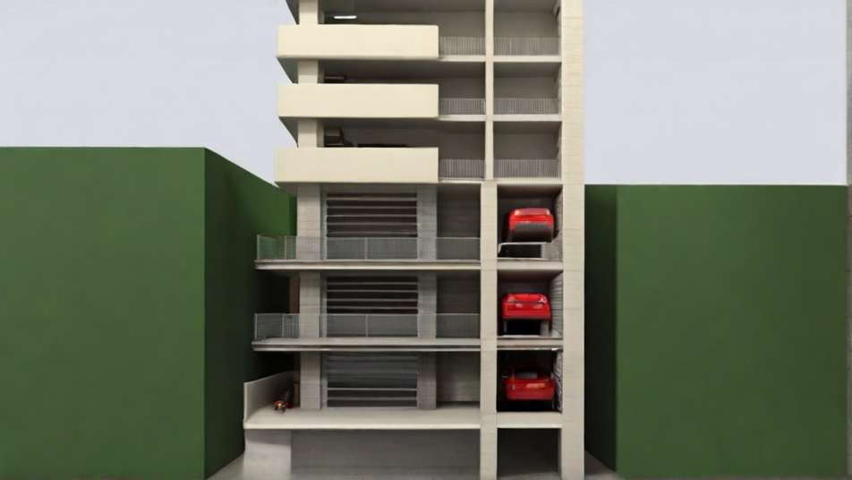

Car Park
Sample Answer

A 3 storey underground car park of a 10 storey building which is built into a moat or into the ground of different elevation so that the carpark has wall openings that can get natural air.
reword this
1. The underground parking facility spans three levels beneath a ten-story building, seamlessly integrated into the surrounding terrain with varying elevations, resembling a moat. Its design incorporates wall openings strategically positioned to allow for natural airflow, creating a refreshing environment within.
2. The multi-storey car park facility will mirror the office spaces below, featuring elevators and escalators that provide direct access to the offices or service counters below. This convenient setup ensures that visitors can park near their destination and quickly access it without having to walk far.
3. The parking structure will be divided into two distinct rings. The outer ring is designated for employees, offering direct access to the outer corridor leading to their respective offices. Conversely, the inner ring is reserved for the public, providing access to the building's interior where the service counters are located.
4. Accessible parking spaces for individuals with disabilities will be conveniently located near building entrances or elevators for easy access.
5. The multi-story car park will be constructed on the 5th, 6th, and 7th floors, preserving valuable ground-level and top-floor real estate space on the 1st and 8th floors. Situating it on these floors will provide optimal ventilation for the parking facility. Additionally, a double-story underground car park will be available for quick errands or short visits, reducing the need for vehicles to ascend to the upper floors and saving fuel consumption.